Last updated: 2022-04-07
Checks: 7 0
Knit directory:
Fetal-Gene-Program-snRNAseq/
This reproducible R Markdown analysis was created with workflowr (version 1.7.0). The Checks tab describes the reproducibility checks that were applied when the results were created. The Past versions tab lists the development history.
Great! Since the R Markdown file has been committed to the Git repository, you know the exact version of the code that produced these results.
Great job! The global environment was empty. Objects defined in the global environment can affect the analysis in your R Markdown file in unknown ways. For reproduciblity it’s best to always run the code in an empty environment.
The command set.seed(20220406) was run prior to running
the code in the R Markdown file. Setting a seed ensures that any results
that rely on randomness, e.g. subsampling or permutations, are
reproducible.
Great job! Recording the operating system, R version, and package versions is critical for reproducibility.
Nice! There were no cached chunks for this analysis, so you can be confident that you successfully produced the results during this run.
Great job! Using relative paths to the files within your workflowr project makes it easier to run your code on other machines.
Great! You are using Git for version control. Tracking code development and connecting the code version to the results is critical for reproducibility.
The results in this page were generated with repository version 78db7d6. See the Past versions tab to see a history of the changes made to the R Markdown and HTML files.
Note that you need to be careful to ensure that all relevant files for
the analysis have been committed to Git prior to generating the results
(you can use wflow_publish or
wflow_git_commit). workflowr only checks the R Markdown
file, but you know if there are other scripts or data files that it
depends on. Below is the status of the Git repository when the results
were generated:
working directory clean
Note that any generated files, e.g. HTML, png, CSS, etc., are not included in this status report because it is ok for generated content to have uncommitted changes.
These are the previous versions of the repository in which changes were
made to the R Markdown (analysis/02-ClusterDCM.Rmd) and
HTML (docs/02-ClusterDCM.html) files. If you’ve configured
a remote Git repository (see ?wflow_git_remote), click on
the hyperlinks in the table below to view the files as they were in that
past version.
| File | Version | Author | Date | Message |
|---|---|---|---|---|
| Rmd | 78db7d6 | neda-mehdiabadi | 2022-04-07 | wflow_publish(c("analysis/Rmd", "data/txt", "data/README.md", |
I will cluster all the DCM samples from batch 1 and batch 2 using the integration technique from the Seurat package.
library(edgeR)Loading required package: limmalibrary(RColorBrewer)
library(org.Hs.eg.db)Loading required package: AnnotationDbiLoading required package: stats4Loading required package: BiocGenerics
Attaching package: 'BiocGenerics'The following object is masked from 'package:limma':
plotMAThe following objects are masked from 'package:stats':
IQR, mad, sd, var, xtabsThe following objects are masked from 'package:base':
anyDuplicated, append, as.data.frame, basename, cbind, colnames,
dirname, do.call, duplicated, eval, evalq, Filter, Find, get, grep,
grepl, intersect, is.unsorted, lapply, Map, mapply, match, mget,
order, paste, pmax, pmax.int, pmin, pmin.int, Position, rank,
rbind, Reduce, rownames, sapply, setdiff, sort, table, tapply,
union, unique, unsplit, which.max, which.minLoading required package: BiobaseWelcome to Bioconductor
Vignettes contain introductory material; view with
'browseVignettes()'. To cite Bioconductor, see
'citation("Biobase")', and for packages 'citation("pkgname")'.Loading required package: IRangesLoading required package: S4Vectors
Attaching package: 'S4Vectors'The following objects are masked from 'package:base':
expand.grid, I, unnamelibrary(limma)
library(Seurat)Attaching SeuratObjectlibrary(cowplot)
library(DelayedArray)Loading required package: Matrix
Attaching package: 'Matrix'The following object is masked from 'package:S4Vectors':
expandLoading required package: MatrixGenericsLoading required package: matrixStats
Attaching package: 'matrixStats'The following objects are masked from 'package:Biobase':
anyMissing, rowMedians
Attaching package: 'MatrixGenerics'The following objects are masked from 'package:matrixStats':
colAlls, colAnyNAs, colAnys, colAvgsPerRowSet, colCollapse,
colCounts, colCummaxs, colCummins, colCumprods, colCumsums,
colDiffs, colIQRDiffs, colIQRs, colLogSumExps, colMadDiffs,
colMads, colMaxs, colMeans2, colMedians, colMins, colOrderStats,
colProds, colQuantiles, colRanges, colRanks, colSdDiffs, colSds,
colSums2, colTabulates, colVarDiffs, colVars, colWeightedMads,
colWeightedMeans, colWeightedMedians, colWeightedSds,
colWeightedVars, rowAlls, rowAnyNAs, rowAnys, rowAvgsPerColSet,
rowCollapse, rowCounts, rowCummaxs, rowCummins, rowCumprods,
rowCumsums, rowDiffs, rowIQRDiffs, rowIQRs, rowLogSumExps,
rowMadDiffs, rowMads, rowMaxs, rowMeans2, rowMedians, rowMins,
rowOrderStats, rowProds, rowQuantiles, rowRanges, rowRanks,
rowSdDiffs, rowSds, rowSums2, rowTabulates, rowVarDiffs, rowVars,
rowWeightedMads, rowWeightedMeans, rowWeightedMedians,
rowWeightedSds, rowWeightedVarsThe following object is masked from 'package:Biobase':
rowMedians
Attaching package: 'DelayedArray'The following objects are masked from 'package:base':
aperm, apply, rowsum, scale, sweeplibrary(scran)Loading required package: SingleCellExperimentLoading required package: SummarizedExperimentLoading required package: GenomicRangesLoading required package: GenomeInfoDb
Attaching package: 'SummarizedExperiment'The following object is masked from 'package:SeuratObject':
AssaysThe following object is masked from 'package:Seurat':
Assays
Attaching package: 'SingleCellExperiment'The following object is masked from 'package:edgeR':
cpmLoading required package: scuttlelibrary(NMF)Loading required package: pkgmakerLoading required package: registry
Attaching package: 'pkgmaker'The following object is masked from 'package:S4Vectors':
new2Loading required package: rngtoolsLoading required package: clusterNMF - BioConductor layer [OK] | Shared memory capabilities [NO: synchronicity] | Cores 31/32 To enable shared memory capabilities, try: install.extras('
NMF
')
Attaching package: 'NMF'The following object is masked from 'package:DelayedArray':
seedThe following object is masked from 'package:S4Vectors':
nrunlibrary(workflowr)
library(ggplot2)
library(clustree)Loading required package: ggraphlibrary(dplyr)
Attaching package: 'dplyr'The following objects are masked from 'package:GenomicRanges':
intersect, setdiff, unionThe following object is masked from 'package:GenomeInfoDb':
intersectThe following object is masked from 'package:matrixStats':
countThe following object is masked from 'package:AnnotationDbi':
selectThe following objects are masked from 'package:IRanges':
collapse, desc, intersect, setdiff, slice, unionThe following objects are masked from 'package:S4Vectors':
first, intersect, rename, setdiff, setequal, unionThe following object is masked from 'package:Biobase':
combineThe following objects are masked from 'package:BiocGenerics':
combine, intersect, setdiff, unionThe following objects are masked from 'package:stats':
filter, lagThe following objects are masked from 'package:base':
intersect, setdiff, setequal, unionsource("code/normCounts.R")
source("code/findModes.R")
source("code/ggplotColors.R")targets <- read.delim("data/targets.txt",header=TRUE, stringsAsFactors = FALSE)
targets$FileName2 <- paste(targets$FileName,"/",sep="")
targets$Group_ID2 <- gsub("LV_","",targets$Group_ID)
group <- c("fetal_1","fetal_2","fetal_3",
"non-diseased_1","non-diseased_2","non-diseased_3",
"diseased_1","diseased_2",
"diseased_3","diseased_4")
m <- match(group, targets$Group_ID2)
targets <- targets[m,]d1 <- Read10X(data.dir = targets$FileName2[targets$Group_ID2=="diseased_1"])
colnames(d1) <- paste(colnames(d1),"d1",sep="_")
d2 <- Read10X(data.dir = targets$FileName2[targets$Group_ID2=="diseased_2"])
colnames(d2) <- paste(colnames(d2),"d2",sep="_")
d3 <- Read10X(data.dir = targets$FileName2[targets$Group_ID2=="diseased_3"])
colnames(d3) <- paste(colnames(d3),"d3",sep="_")
d4 <- Read10X(data.dir = targets$FileName2[targets$Group_ID2=="diseased_4"])
colnames(d4) <- paste(colnames(d4),"d4",sep="_")
# Combine 4 samples into one big data matrix
alld <- cbind(d1,d2,d3,d4)I’m using gene annotation information from the
org.Hs.eg.db package.
columns(org.Hs.eg.db) [1] "ACCNUM" "ALIAS" "ENSEMBL" "ENSEMBLPROT" "ENSEMBLTRANS"
[6] "ENTREZID" "ENZYME" "EVIDENCE" "EVIDENCEALL" "GENENAME"
[11] "GENETYPE" "GO" "GOALL" "IPI" "MAP"
[16] "OMIM" "ONTOLOGY" "ONTOLOGYALL" "PATH" "PFAM"
[21] "PMID" "PROSITE" "REFSEQ" "SYMBOL" "UCSCKG"
[26] "UNIPROT" ann <- AnnotationDbi:::select(org.Hs.eg.db,keys=rownames(alld),columns=c("SYMBOL","ENTREZID","ENSEMBL","GENENAME","CHR"),keytype = "SYMBOL")'select()' returned 1:many mapping between keys and columnsm <- match(rownames(alld),ann$SYMBOL)
ann <- ann[m,]
table(ann$SYMBOL==rownames(alld))
TRUE
33939 mito <- grep("mitochondrial",ann$GENENAME)
length(mito)[1] 224ribo <- grep("ribosomal",ann$GENENAME)
length(ribo)[1] 197missingEZID <- which(is.na(ann$ENTREZID))
length(missingEZID)[1] 10976These genes are not informative for downstream analysis.
chuck <- unique(c(mito,ribo,missingEZID))
length(chuck)[1] 11318alld.keep <- alld[-chuck,]
ann.keep <- ann[-chuck,]
table(ann.keep$SYMBOL==rownames(alld.keep))
TRUE
22621 Removing very lowly expressed genes helps to reduce the noise in the data. Here I am choosing to keep genes with at least 1 count in at least 20 cells. This means that a cluster made up of at least 20 cells can potentially be detected (minimum cluster size = 20 cells).
numzero.genes <- rowSums(alld.keep==0)
#avg.exp <- rowMeans(cpm.DGEList(y.kid,log=TRUE))
#plot(avg.exp,numzero.genes,xlab="Average log-normalised-counts",ylab="Number zeroes per gene")
table(numzero.genes > (ncol(alld.keep)-20))
FALSE TRUE
17703 4918 keep.genes <- numzero.genes < (ncol(alld.keep)-20)
table(keep.genes)keep.genes
FALSE TRUE
4959 17662 alld.keep <- alld.keep[keep.genes,]
dim(alld.keep)[1] 17662 32712ann.keep <- ann.keep[keep.genes,]The total size of the DCM dataset is 32712 cells and 17662 genes.
I will remove the sex chromosome genes before clustering so that the sex doesn’t play a role in determining the clusters.
sexchr <- ann.keep$CHR %in% c("X","Y")
alld.nosex <- alld.keep[!sexchr,]
dim(alld.nosex)[1] 17013 32712ann.nosex <- ann.keep[!sexchr,]#save(ann,ann.keep,ann.nosex,alld,alld.keep,alld.nosex,file="./output/RDataObjects/dcmObjs.Rdata")Here I am following the Seurat vignette on performing clustering using their integration method to deal with batch effects.
biorep <- factor(rep(c("d1","d2","d3","d4"),c(ncol(d1),ncol(d2),ncol(d3),ncol(d4))))
names(biorep) <- colnames(alld.keep)
sex <- factor(rep(c("m","f","f","f"),c(ncol(d1),ncol(d2),ncol(d3),ncol(d4))))
names(sex) <- colnames(alld.keep)
age <- rep(c(5,10.83,9,10.83),c(ncol(d1),ncol(d2),ncol(d3),ncol(d4)))
names(age) <- colnames(alld.keep)
batch <- rep(c("B2","B2","B1","B2"),c(ncol(d1),ncol(d2),ncol(d3),ncol(d4)))
names(batch) <- colnames(alld.keep)
dcm <- CreateSeuratObject(counts = alld.nosex, project = "dcm")
dcm <- AddMetaData(object=dcm, metadata = biorep, col.name="biorep")
dcm <- AddMetaData(object=dcm, metadata = sex, col.name="sex")
dcm <- AddMetaData(object=dcm, metadata = age, col.name="age")
dcm <- AddMetaData(object=dcm, metadata = batch, col.name="batch")dcm.list <- SplitObject(dcm, split.by = "biorep")This new method replaces the NormalizeData,
FindVariableFeatures and ScaleData functions.
It performs regularised negative binomial regression with the total
sequencing depth per cell as the covariate (i.e. library size), as well
as any other user supplied covariates. The Pearson residuals are then
used in downstream analysis.
# This is a bit slow
for(i in 1:length(dcm.list)) {
dcm.list[[i]] <- SCTransform(dcm.list[[i]], verbose = FALSE)
# dcm.list[[i]] <- GetResidual(dcm.list[[i]])
}#for (i in 1:length(dcm.list)) {
# dcm.list[[i]] <- NormalizeData(dcm.list[[i]], verbose = FALSE)
# dcm.list[[i]] <- FindVariableFeatures(dcm.list[[i]], selection.method #= "vst",
# nfeatures = 2000, verbose = FALSE)
#}There are two steps:
The default number of dimensions is 30. Should increase the number of integration anchors to 3000.
dcm.anchors <- FindIntegrationAnchors(object.list = dcm.list, dims = 1:30, anchor.features = 3000)Computing 3000 integration featuresScaling features for provided objectsFinding all pairwise anchorsRunning CCAMerging objectsFinding neighborhoodsFinding anchors Found 15698 anchorsFiltering anchors Retained 4933 anchorsRunning CCAMerging objectsFinding neighborhoodsFinding anchors Found 14724 anchorsFiltering anchors Retained 5651 anchorsRunning CCAMerging objectsFinding neighborhoodsFinding anchors Found 13981 anchorsFiltering anchors Retained 5936 anchorsRunning CCAMerging objectsFinding neighborhoodsFinding anchors Found 12695 anchorsFiltering anchors Retained 5463 anchorsRunning CCAMerging objectsFinding neighborhoodsFinding anchors Found 13629 anchorsFiltering anchors Retained 7756 anchorsRunning CCAMerging objectsFinding neighborhoodsFinding anchors Found 12721 anchorsFiltering anchors Retained 5421 anchorsdcm.integrated <- IntegrateData(anchorset = dcm.anchors, dims = 1:30)Merging dataset 4 into 2Extracting anchors for merged samplesFinding integration vectorsFinding integration vector weightsIntegrating dataMerging dataset 3 into 2 4Extracting anchors for merged samplesFinding integration vectorsFinding integration vector weightsIntegrating dataMerging dataset 1 into 2 4 3Extracting anchors for merged samplesFinding integration vectorsFinding integration vector weightsIntegrating dataDefaultAssay(object = dcm.integrated) <- "integrated"dcm.integrated <- ScaleData(dcm.integrated, verbose = FALSE)
dcm.integrated <- RunPCA(dcm.integrated, npcs = 50, verbose = FALSE)
ElbowPlot(dcm.integrated,ndims=50)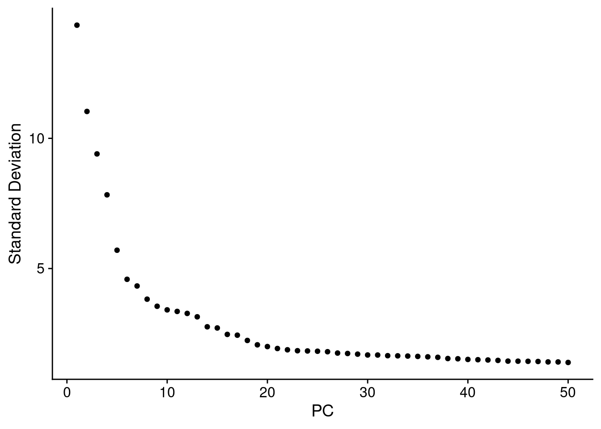
VizDimLoadings(dcm.integrated, dims = 1:4, reduction = "pca")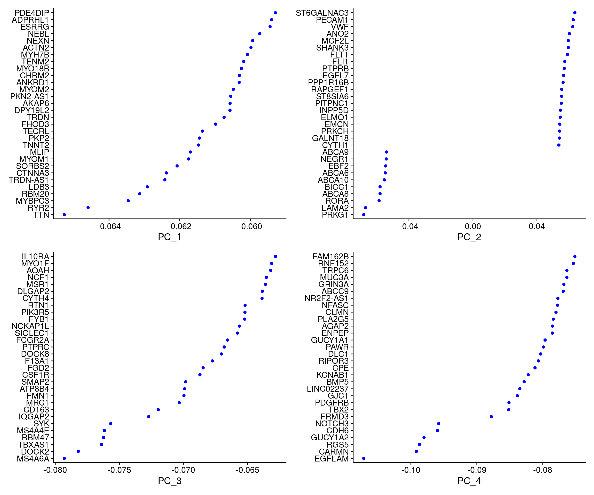
DimPlot(dcm.integrated, reduction = "pca",group.by="biorep")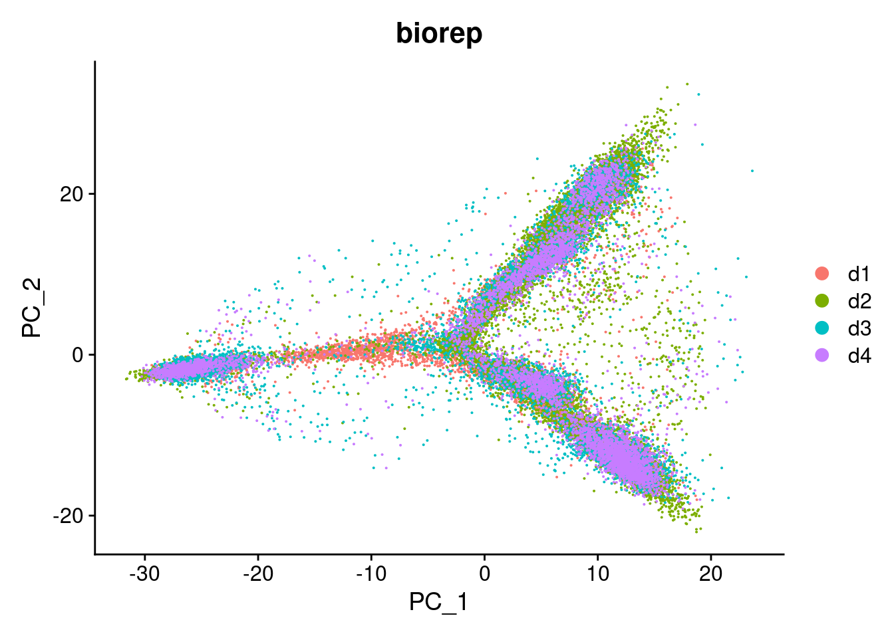
DimPlot(dcm.integrated, reduction = "pca",group.by="sex")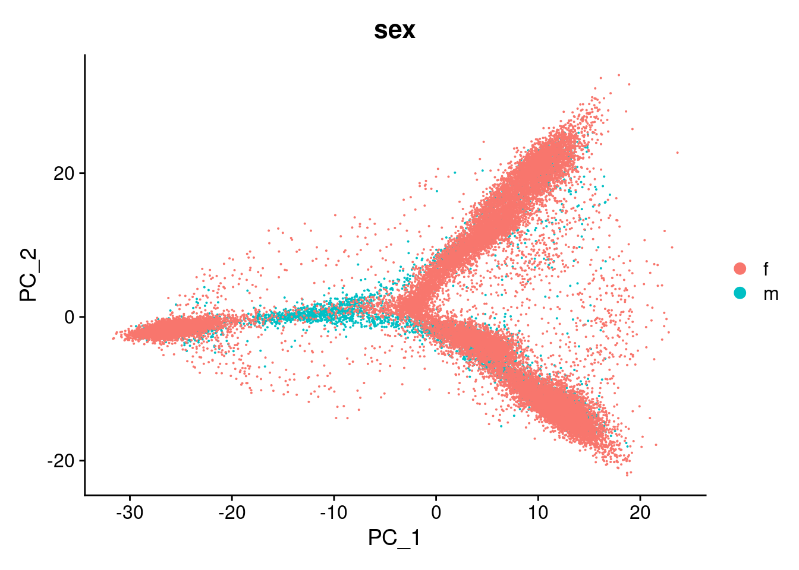
DimPlot(dcm.integrated, reduction = "pca",group.by="batch")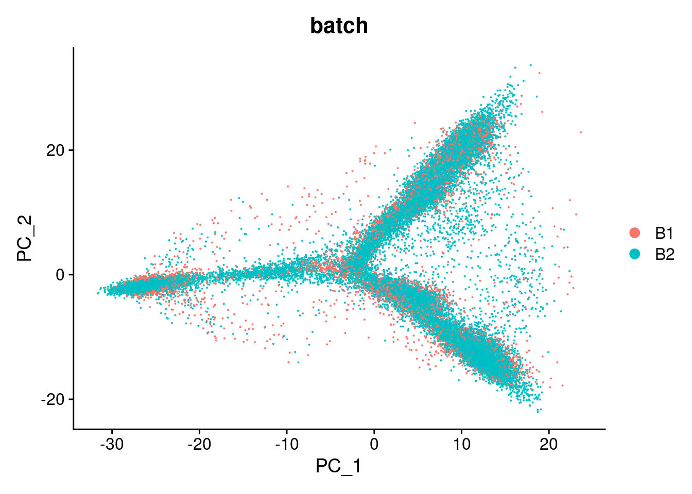
DimHeatmap(dcm.integrated, dims = 1:15, cells = 500, balanced = TRUE)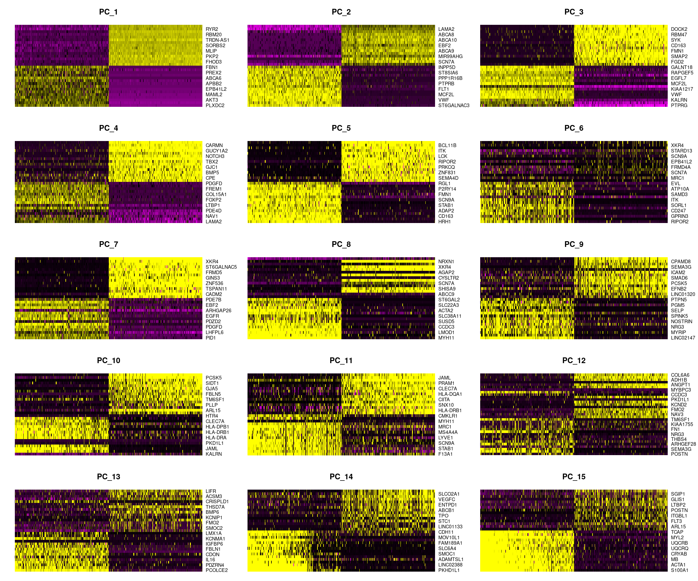
DimHeatmap(dcm.integrated, dims = 16:30, cells = 500, balanced = TRUE)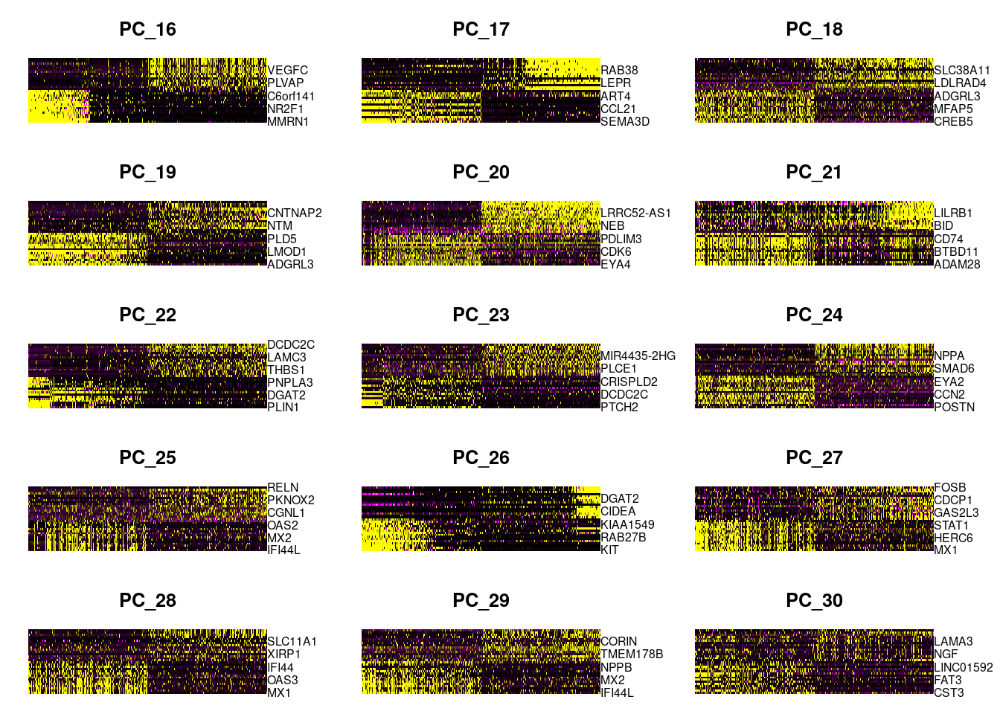
dcm.integrated <- FindNeighbors(dcm.integrated, dims = 1:20)Computing nearest neighbor graphComputing SNNdcm.integrated <- FindClusters(dcm.integrated, resolution = 0.3)Modularity Optimizer version 1.3.0 by Ludo Waltman and Nees Jan van Eck
Number of nodes: 32712
Number of edges: 1322177
Running Louvain algorithm...
Maximum modularity in 10 random starts: 0.9482
Number of communities: 17
Elapsed time: 10 secondstable(Idents(dcm.integrated))
0 1 2 3 4 5 6 7 8 9 10 11 12 13 14 15
9115 6737 3450 2922 2690 1686 1611 1376 1229 562 448 235 231 177 120 74
16
49 barplot(table(Idents(dcm.integrated)),ylab="Number of cells",xlab="Clusters")
title("Number of cells in each cluster")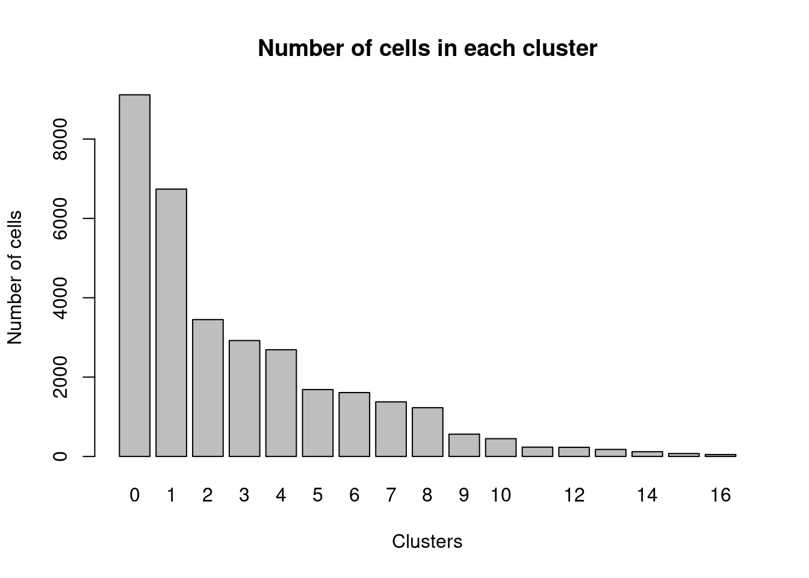
set.seed(10)
dcm.integrated <- RunTSNE(dcm.integrated, reduction = "pca", dims = 1:20)#pdf(file="./output/Figures/tsne-dcmALL.pdf",width=10,height=8,onefile = FALSE)
DimPlot(dcm.integrated, reduction = "tsne",label=TRUE,label.size = 6,pt.size = 0.5)+NoLegend()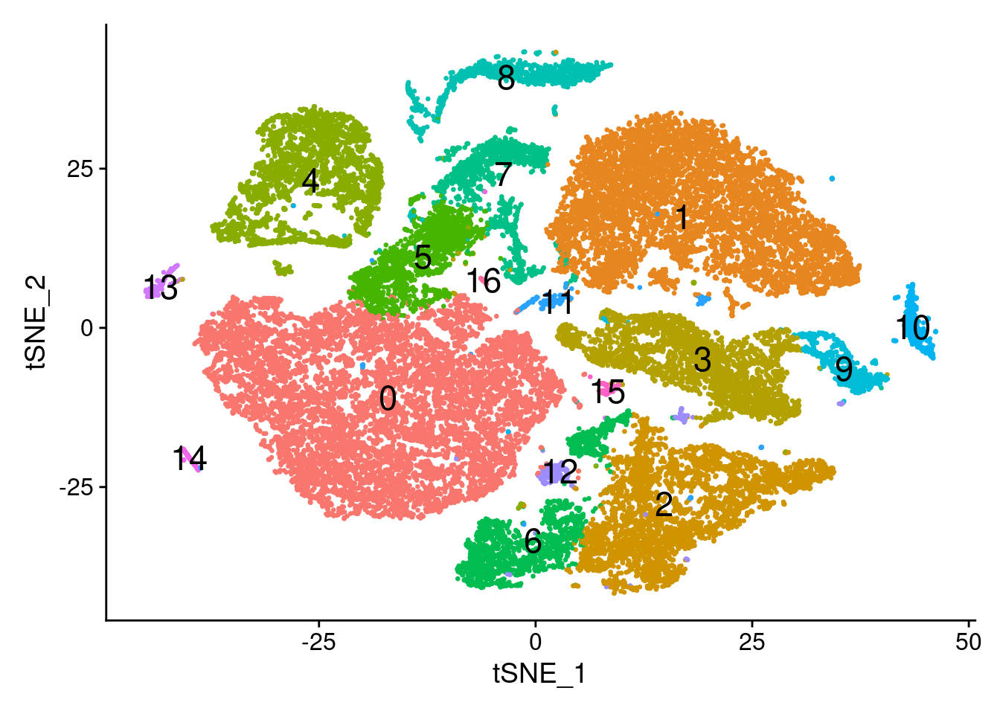
#dev.off()set.seed(10)
dcm.integrated <- RunUMAP(dcm.integrated, reduction = "pca", dims = 1:20)Warning: The default method for RunUMAP has changed from calling Python UMAP via reticulate to the R-native UWOT using the cosine metric
To use Python UMAP via reticulate, set umap.method to 'umap-learn' and metric to 'correlation'
This message will be shown once per session10:40:38 UMAP embedding parameters a = 0.9922 b = 1.11210:40:38 Read 32712 rows and found 20 numeric columns10:40:38 Using Annoy for neighbor search, n_neighbors = 3010:40:38 Building Annoy index with metric = cosine, n_trees = 500% 10 20 30 40 50 60 70 80 90 100%[----|----|----|----|----|----|----|----|----|----|**************************************************|
10:40:44 Writing NN index file to temp file /tmp/RtmpgtlL1y/file41e35c65da0a
10:40:44 Searching Annoy index using 1 thread, search_k = 3000
10:40:56 Annoy recall = 100%
10:40:57 Commencing smooth kNN distance calibration using 1 thread
10:41:00 Initializing from normalized Laplacian + noise
10:41:04 Commencing optimization for 200 epochs, with 1453322 positive edges
10:41:47 Optimization finished#pdf(file="./output/Figures/umap-dcmALL.pdf",width=10,height=8,onefile = FALSE)
DimPlot(dcm.integrated, reduction = "umap",label=TRUE,label.size = 6,pt.size = 0.5)+NoLegend()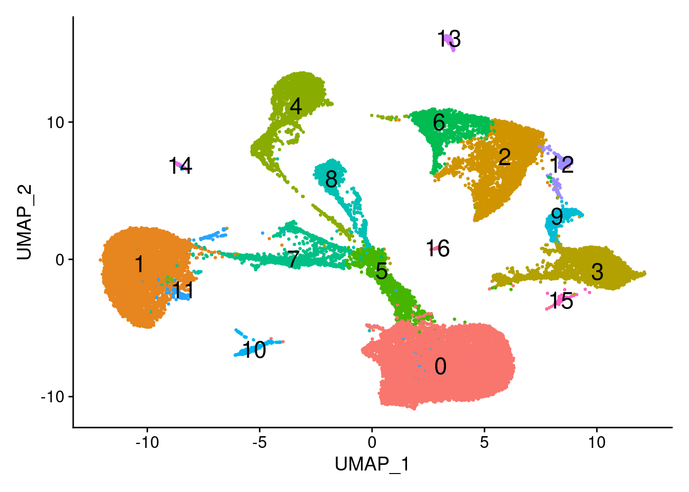
#dev.off()DimPlot(dcm.integrated, reduction = "umap", split.by = "biorep",label=TRUE,label.size = 5)+NoLegend()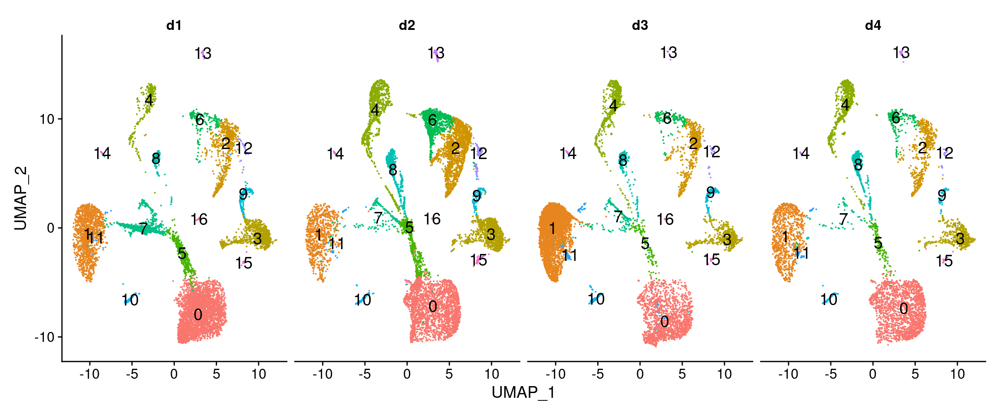
DimPlot(dcm.integrated, reduction = "umap", split.by = "sex",label=TRUE,label.size = 5)+NoLegend()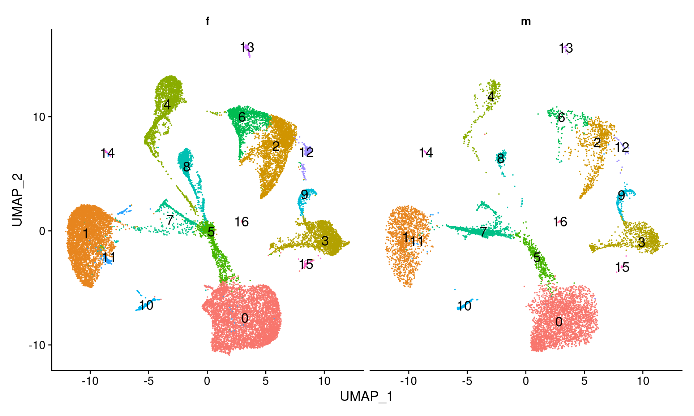
DefaultAssay(dcm.integrated) <- "SCT"
FeaturePlot(dcm.integrated, reduction = "umap", features = c("TNNT2", "MYH6", "WT1", "PECAM1", "TBX3", "PDGFRA"), pt.size = 0.2, label = T, ncol = 3)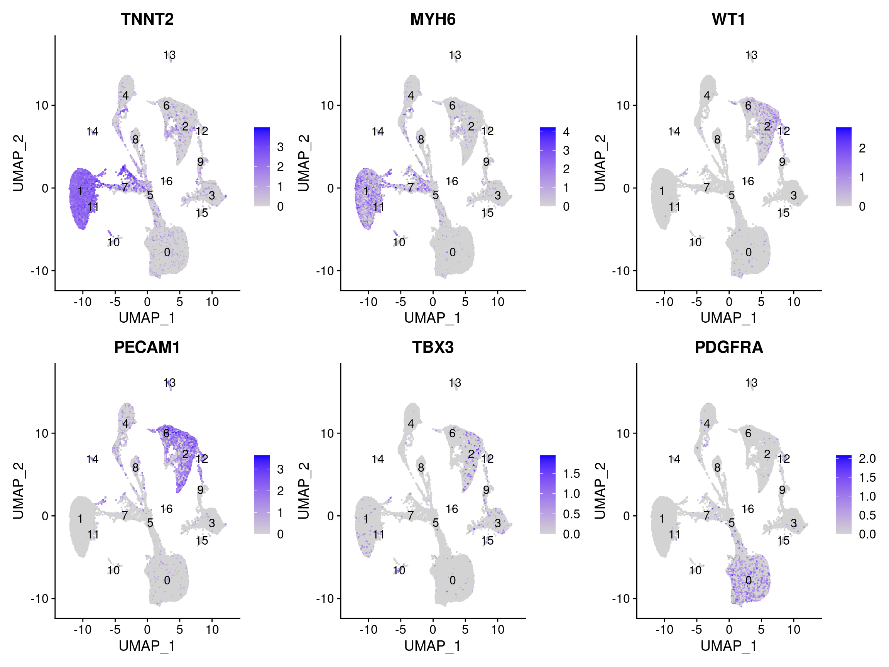
DefaultAssay(dcm.integrated) <- "integrated"
clusres <- c(0.1,0.2,0.3,0.4,0.5,0.6,0.7,0.8,0.9,1,1.1,1.2)for(i in 1:length(clusres)){
dcm.integrated <- FindClusters(dcm.integrated,
resolution = clusres[i])
}Modularity Optimizer version 1.3.0 by Ludo Waltman and Nees Jan van Eck
Number of nodes: 32712
Number of edges: 1322177
Running Louvain algorithm...
Maximum modularity in 10 random starts: 0.9786
Number of communities: 10
Elapsed time: 8 seconds
Modularity Optimizer version 1.3.0 by Ludo Waltman and Nees Jan van Eck
Number of nodes: 32712
Number of edges: 1322177
Running Louvain algorithm...
Maximum modularity in 10 random starts: 0.9626
Number of communities: 14
Elapsed time: 9 seconds
Modularity Optimizer version 1.3.0 by Ludo Waltman and Nees Jan van Eck
Number of nodes: 32712
Number of edges: 1322177
Running Louvain algorithm...
Maximum modularity in 10 random starts: 0.9482
Number of communities: 17
Elapsed time: 8 seconds
Modularity Optimizer version 1.3.0 by Ludo Waltman and Nees Jan van Eck
Number of nodes: 32712
Number of edges: 1322177
Running Louvain algorithm...
Maximum modularity in 10 random starts: 0.9367
Number of communities: 24
Elapsed time: 9 seconds
Modularity Optimizer version 1.3.0 by Ludo Waltman and Nees Jan van Eck
Number of nodes: 32712
Number of edges: 1322177
Running Louvain algorithm...
Maximum modularity in 10 random starts: 0.9289
Number of communities: 25
Elapsed time: 8 seconds
Modularity Optimizer version 1.3.0 by Ludo Waltman and Nees Jan van Eck
Number of nodes: 32712
Number of edges: 1322177
Running Louvain algorithm...
Maximum modularity in 10 random starts: 0.9222
Number of communities: 26
Elapsed time: 8 seconds
Modularity Optimizer version 1.3.0 by Ludo Waltman and Nees Jan van Eck
Number of nodes: 32712
Number of edges: 1322177
Running Louvain algorithm...
Maximum modularity in 10 random starts: 0.9146
Number of communities: 25
Elapsed time: 9 seconds
Modularity Optimizer version 1.3.0 by Ludo Waltman and Nees Jan van Eck
Number of nodes: 32712
Number of edges: 1322177
Running Louvain algorithm...
Maximum modularity in 10 random starts: 0.9086
Number of communities: 27
Elapsed time: 8 seconds
Modularity Optimizer version 1.3.0 by Ludo Waltman and Nees Jan van Eck
Number of nodes: 32712
Number of edges: 1322177
Running Louvain algorithm...
Maximum modularity in 10 random starts: 0.9028
Number of communities: 28
Elapsed time: 8 seconds
Modularity Optimizer version 1.3.0 by Ludo Waltman and Nees Jan van Eck
Number of nodes: 32712
Number of edges: 1322177
Running Louvain algorithm...
Maximum modularity in 10 random starts: 0.8973
Number of communities: 31
Elapsed time: 8 seconds
Modularity Optimizer version 1.3.0 by Ludo Waltman and Nees Jan van Eck
Number of nodes: 32712
Number of edges: 1322177
Running Louvain algorithm...
Maximum modularity in 10 random starts: 0.8931
Number of communities: 32
Elapsed time: 8 seconds
Modularity Optimizer version 1.3.0 by Ludo Waltman and Nees Jan van Eck
Number of nodes: 32712
Number of edges: 1322177
Running Louvain algorithm...
Maximum modularity in 10 random starts: 0.8875
Number of communities: 32
Elapsed time: 7 secondspct.male <- function(x) {mean(x=="m")}
pct.female <- function(x) {mean(x=="f")}
biorep1 <- function(x) {mean(x=="d1")}
biorep2 <- function(x) {mean(x=="d2")}
biorep3 <- function(x) {mean(x=="d3")}
biorep3 <- function(x) {mean(x=="d4")}clustree(dcm.integrated, prefix = "integrated_snn_res.")Warning: The `add` argument of `group_by()` is deprecated as of dplyr 1.0.0.
Please use the `.add` argument instead.
This warning is displayed once every 8 hours.
Call `lifecycle::last_lifecycle_warnings()` to see where this warning was generated.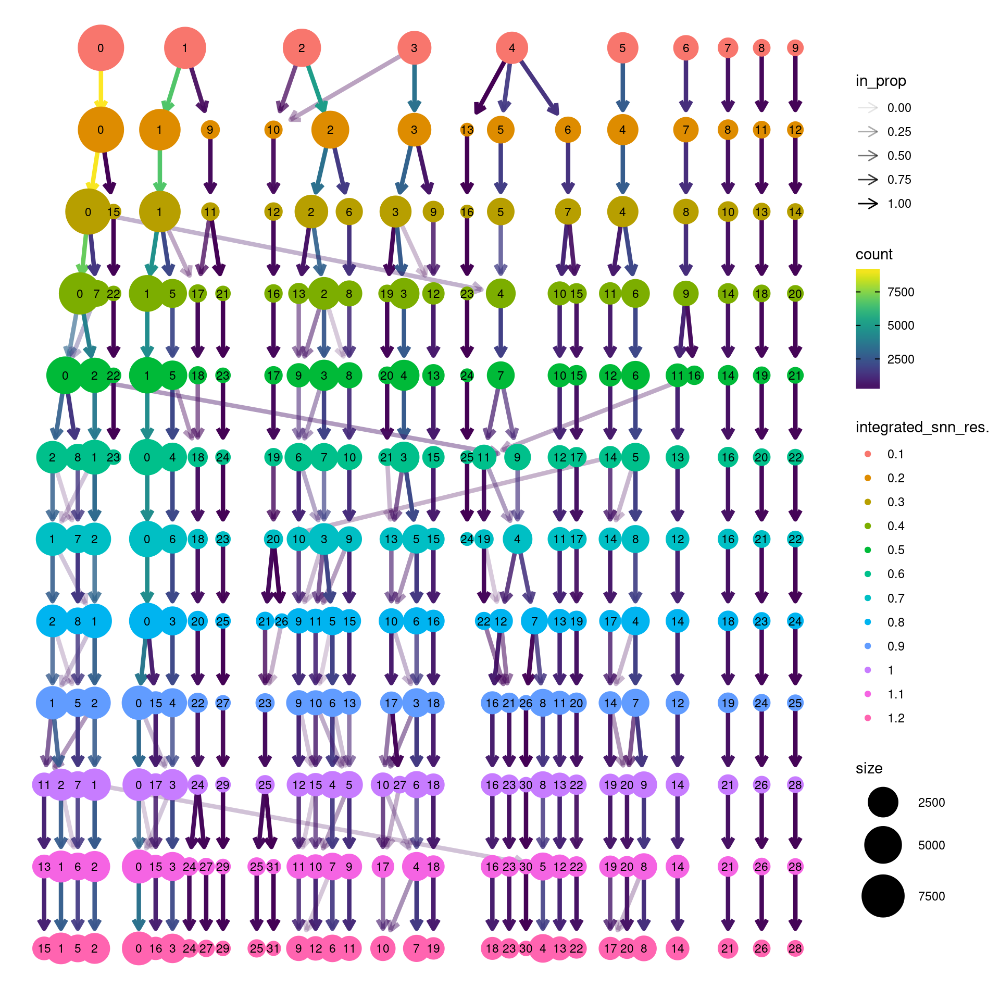
clustree(dcm.integrated, prefix = "integrated_snn_res.",
node_colour = "biorep", node_colour_aggr = "biorep1",assay="RNA")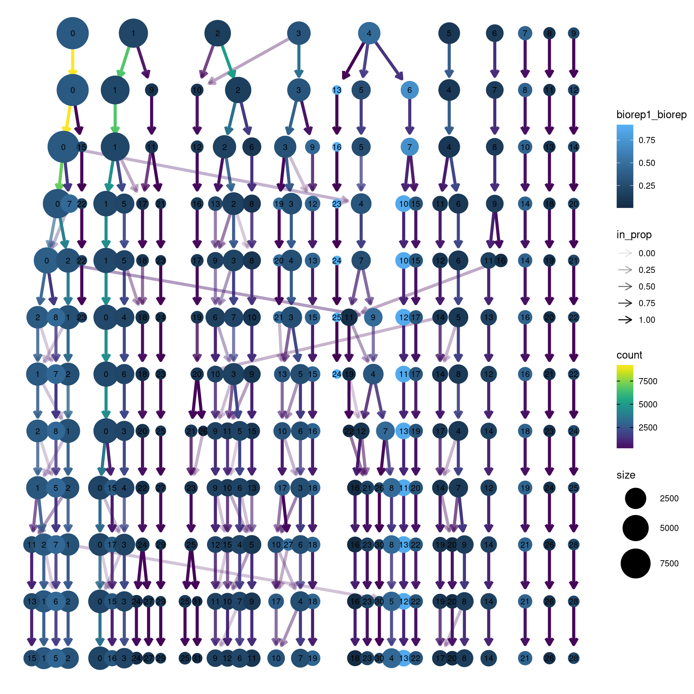
clustree(dcm.integrated, prefix = "integrated_snn_res.",
node_colour = "biorep", node_colour_aggr = "biorep2",assay="RNA")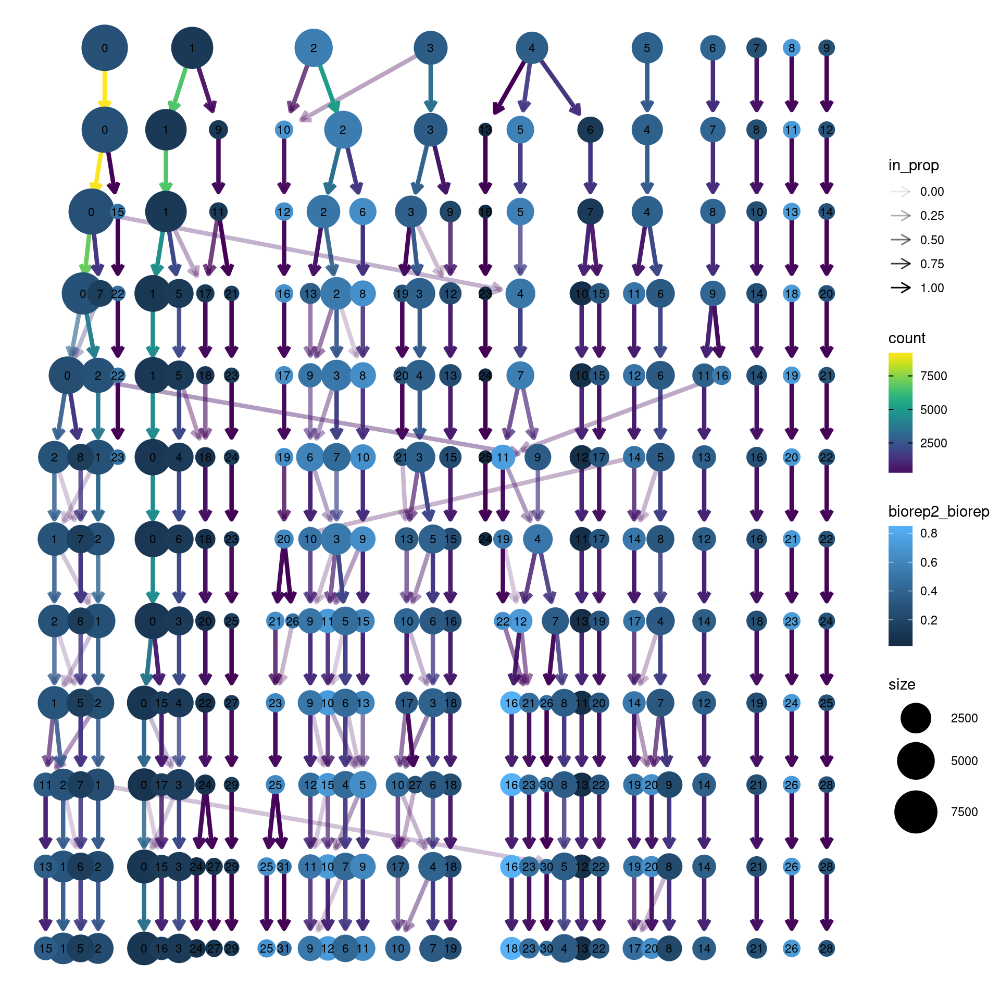
clustree(dcm.integrated, prefix = "integrated_snn_res.",
node_colour = "biorep", node_colour_aggr = "biorep3",assay="RNA")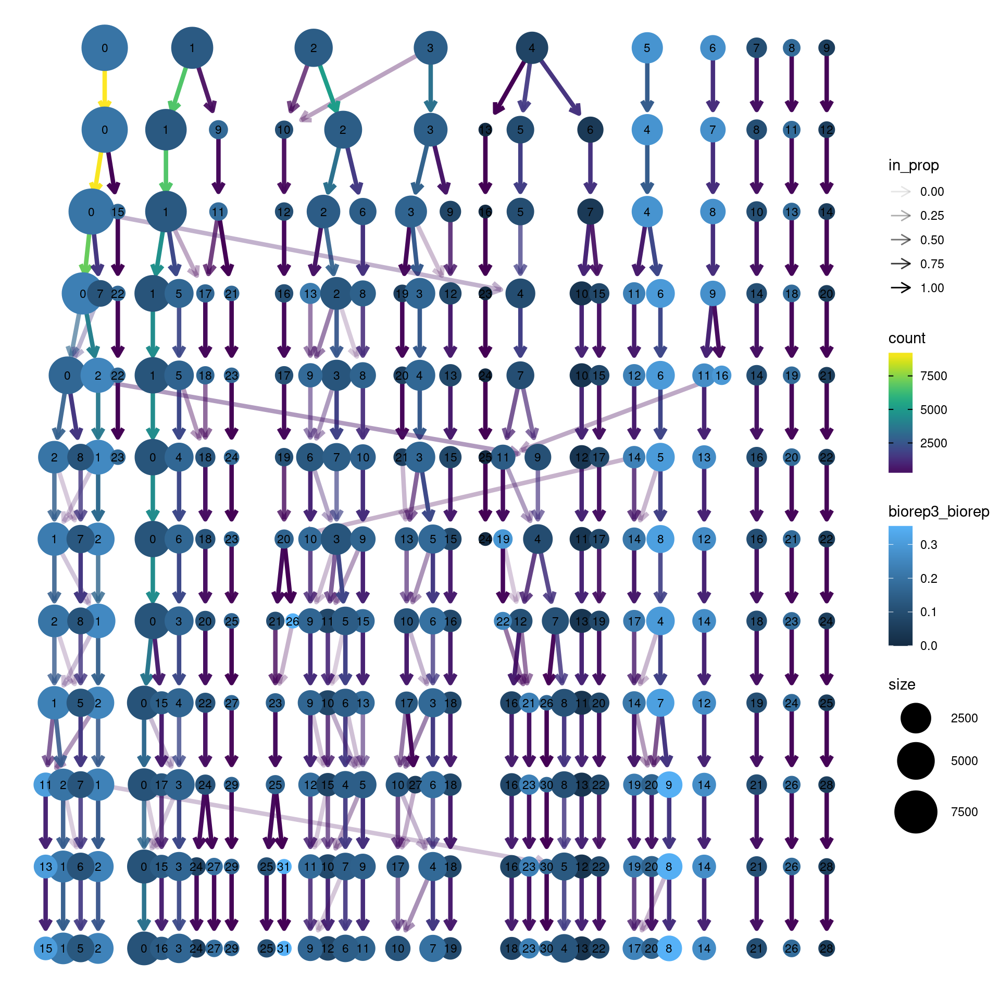
clustree(dcm.integrated, prefix = "integrated_snn_res.",
node_colour = "sex", node_colour_aggr = "pct.female",assay="RNA")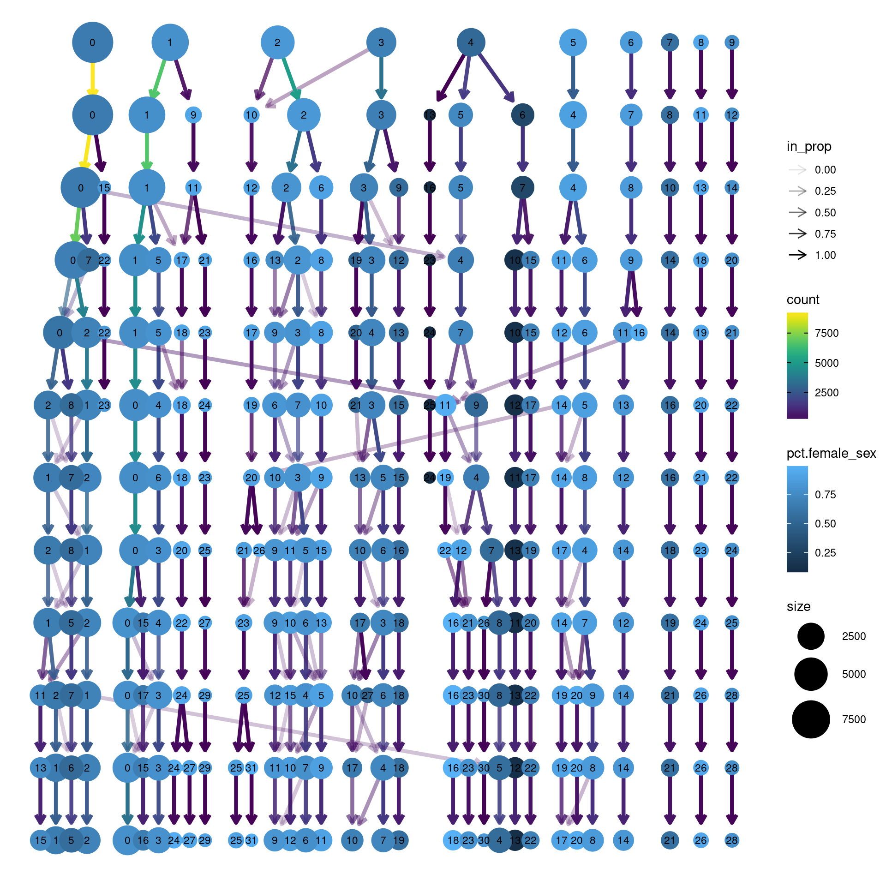
clustree(dcm.integrated, prefix = "integrated_snn_res.",
node_colour = "sex", node_colour_aggr = "pct.male",assay="RNA")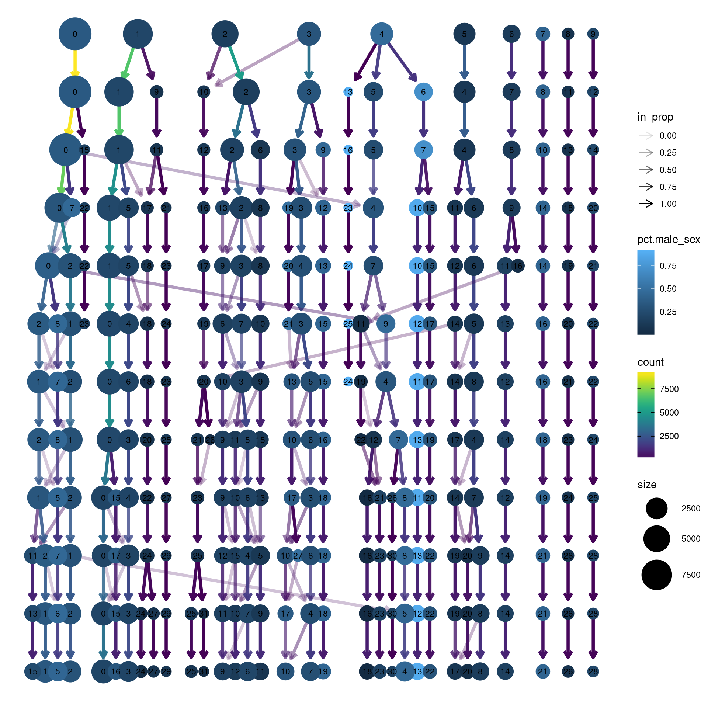
clustree(dcm.integrated, prefix = "integrated_snn_res.",
node_colour = "TNNT2", node_colour_aggr = "median",
assay="RNA")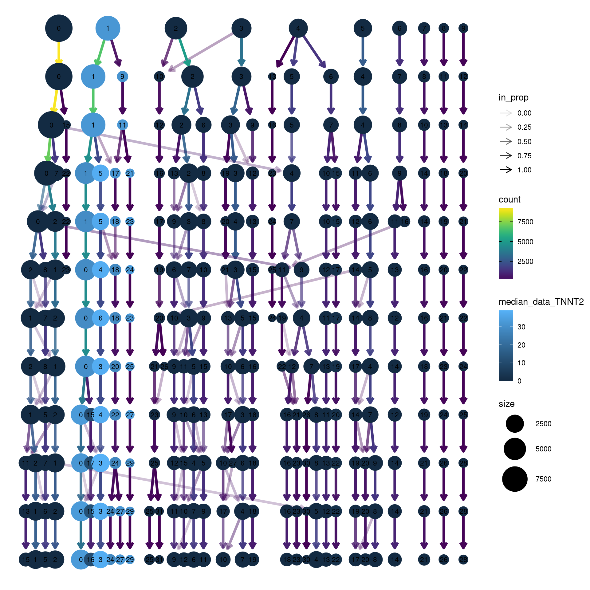
DefaultAssay(dcm.integrated) <- "RNA"
Idents(dcm.integrated) <- dcm.integrated$integrated_snn_res.0.3#saveRDS(dcm.integrated,file="./output/RDataObjects/dcm-int.Rds")par(mfrow=c(1,1))
par(mar=c(4,4,2,2))
tab <- table(Idents(dcm.integrated),dcm@meta.data$biorep)
barplot(t(tab/rowSums(tab)),beside=TRUE,col=ggplotColors(4),legend=TRUE)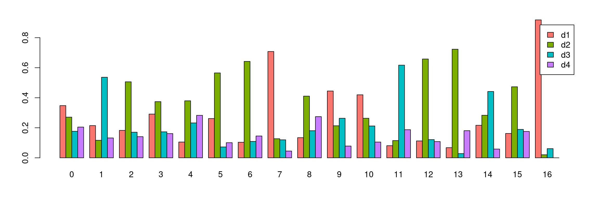
# Limma-trend for DE
y.dcm <- DGEList(alld.keep)
logcounts <- normCounts(y.dcm,log=TRUE,prior.count=0.5)
maxclust <- length(levels(Idents(dcm.integrated)))-1
grp <- paste("c",Idents(dcm.integrated),sep = "")
grp <- factor(grp,levels = paste("c",0:maxclust,sep=""))
design <- model.matrix(~0+grp)
colnames(design) <- levels(grp)
mycont <- matrix(NA,ncol=length(levels(grp)),nrow=length(levels(grp)))
rownames(mycont)<-colnames(mycont)<-levels(grp)
diag(mycont)<-1
mycont[upper.tri(mycont)]<- -1/(length(levels(factor(grp)))-1)
mycont[lower.tri(mycont)]<- -1/(length(levels(factor(grp)))-1)
fit <- lmFit(logcounts,design)
fit.cont <- contrasts.fit(fit,contrasts=mycont)
fit.cont <- eBayes(fit.cont,trend=TRUE,robust=TRUE)
fit.cont$genes <- ann.keep
summary(decideTests(fit.cont)) c0 c1 c2 c3 c4 c5 c6 c7 c8 c9 c10 c11
Down 4888 6195 7641 6588 7422 12347 5135 11563 8540 3959 5345 988
NotSig 7990 5432 7441 9091 6857 5085 9662 5419 7177 11792 10839 11716
Up 4784 6035 2580 1983 3383 230 2865 680 1945 1911 1478 4958
c12 c13 c14 c15 c16
Down 698 1211 1226 470 700
NotSig 11448 14063 14391 14118 15114
Up 5516 2388 2045 3074 1848treat <- treat(fit.cont,lfc=0.5)
dt <- decideTests(treat)
summary(dt) c0 c1 c2 c3 c4 c5 c6 c7 c8 c9 c10 c11
Down 158 383 310 209 489 992 243 1384 669 193 218 26
NotSig 17095 16338 16961 17174 16671 16661 17031 16185 16725 17130 17215 16886
Up 409 941 391 279 502 9 388 93 268 339 229 750
c12 c13 c14 c15 c16
Down 31 99 108 27 90
NotSig 17237 17206 17194 17308 17097
Up 394 357 360 327 475par(mfrow=c(3,3))
for(i in 1:ncol(mycont)){
plotMD(treat,coef=i,status = dt[,i],hl.cex=0.5)
abline(h=0,col=colours()[c(226)])
lines(lowess(treat$Amean,treat$coefficients[,i]),lwd=1.5,col=4)
}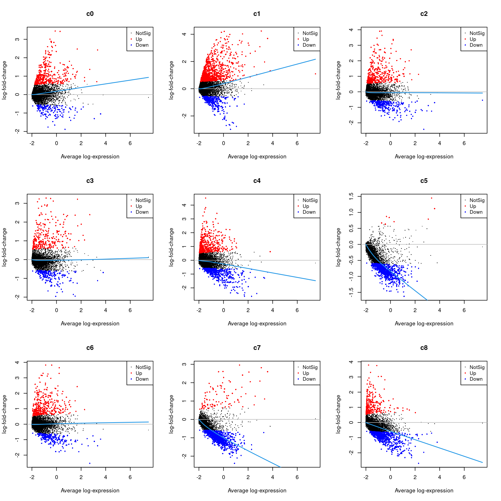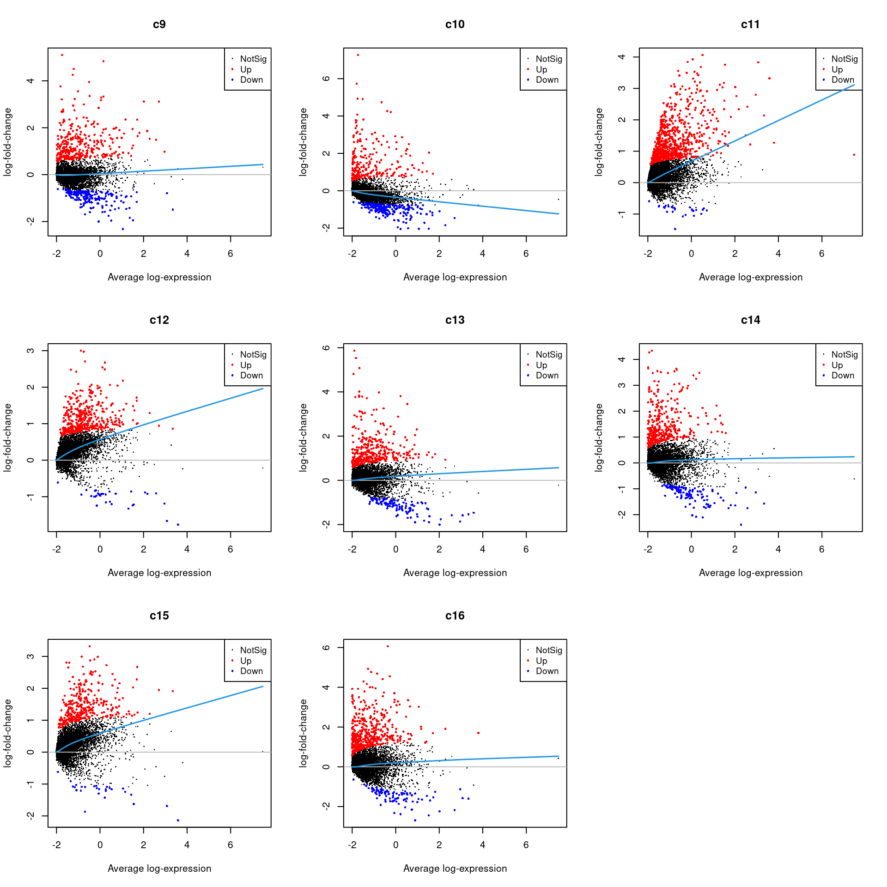
#write.csv(dcmmarkers,file="./output/Alldcm-clustermarkers.csv")
contnames <- colnames(mycont)
for(i in 1:length(contnames)){
topsig <- topTreat(treat,coef=i,n=Inf,p.value=0.05)
write.csv(topsig[topsig$logFC>0,],file=paste("./output/Up-Cluster-",contnames[i],".csv",sep=""))
write.csv(topGO(goana(de=topsig$ENTREZID[topsig$logFC>0],universe=treat$genes$ENTREZID,species="Hs"),number=50),
file=paste("./output/GO-Cluster-",contnames[i],".csv",sep=""))
}
hm <- read.delim("./data/heart-markers-long.txt",stringsAsFactors = FALSE)
hgene <- toupper(hm$Gene)
hgene <- unique(hgene)
m <- match(hgene,rownames(logcounts))
m <- m[!is.na(m)]
sam <- factor(dcm.integrated$biorep)
newgrp <- paste(grp,sam,sep=".")
newgrp <- factor(newgrp,levels=paste(rep(levels(grp),each=4),levels(sam),sep="."))
o <-order(newgrp)
annot <- data.frame(CellType=grp,Sample=sam,NewGroup=newgrp)
mycelltypes <- hm$Celltype[match(rownames(logcounts)[m],toupper(hm$Gene))]
mycelltypes <- factor(mycelltypes)
myColors <- list(Clust=NA,Sample=NA,Celltypes=NA)
myColors$Clust<-sample(ggplotColors(length(levels(grp))),length(levels(grp)))
names(myColors$Clust)<-levels(grp)
myColors$Sample <- brewer.pal(4, "Set1")
names(myColors$Sample) <- levels(sam)
myColors$Celltypes <- ggplotColors(length(levels(mycelltypes)))
names(myColors$Celltypes) <- levels(mycelltypes)
mygenes <- rownames(logcounts)[m]
mygenelab <- paste(mygenes,mycelltypes,sep="_")par(mfrow=c(1,1))
#pdf(file="./output/Figures/dcm-heatmap-hmarkers-res03.pdf",width=20,height=15,onefile = FALSE)
aheatmap(logcounts[m,o],Rowv=NA,Colv=NA,labRow=mygenelab,labCol=NA,
annCol=list(Clust=grp[o],Sample=sam[o]),
# annRow = list(Celltypes=mycelltypes),
annColors = myColors,
fontsize=10,color="-RdYlBu")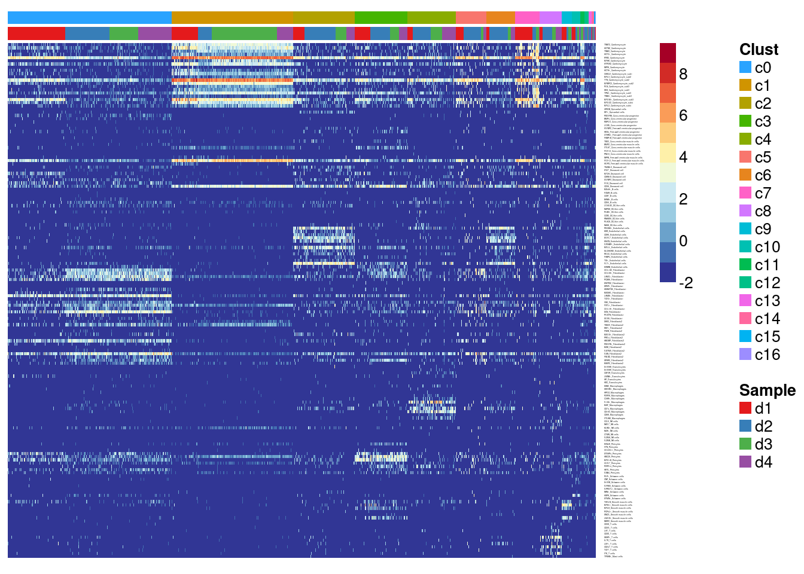
#dev.off()sumexpr <- matrix(NA,nrow=nrow(logcounts),ncol=length(levels(newgrp)))
rownames(sumexpr) <- rownames(logcounts)
colnames(sumexpr) <- levels(newgrp)
for(i in 1:nrow(sumexpr)){
sumexpr[i,] <- tapply(logcounts[i,],newgrp,median)
}par(mfrow=c(1,1))
clust <- rep(levels(grp),each=4)
samps <- rep(levels(sam),length(levels(grp)))
#pdf(file="./output/Figures/dcm-heatmap-hmarkers-summarised-res03.pdf",width=20,height=15,onefile = FALSE)
aheatmap(sumexpr[m,],Rowv = NA,Colv = NA, labRow = mygenelab,
annCol=list(Clust=clust,Sample=samps),
# annRow=list(Celltypes=mycelltypes),
annColors=myColors,
fontsize=10,color="-RdYlBu")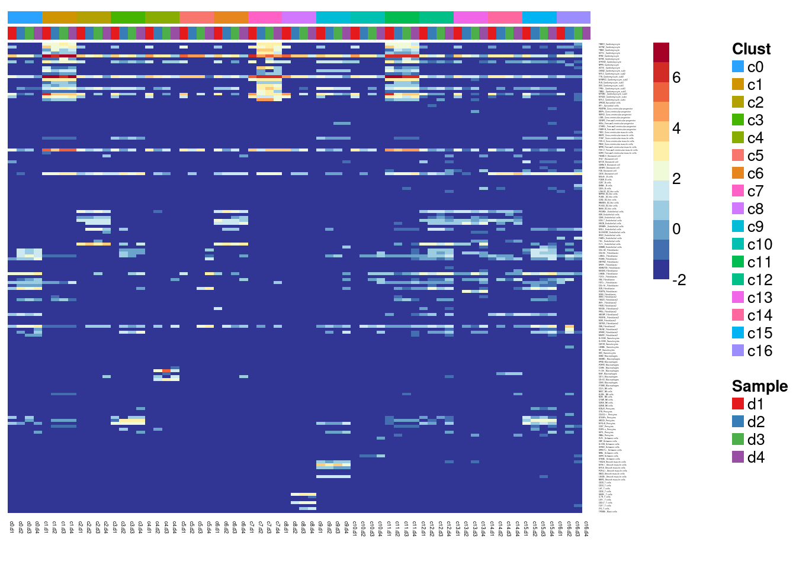
#dev.off()# This loads a list object called sig.genes.gst
load(file="/group/card2/Neda/MCRI_LAB/scRNAseq-ES/Data/gstlist-fetal.Rdata")
expr.score <- matrix(NA,nrow=length(sig.genes.gst),ncol=length(levels(newgrp)))
colnames(expr.score) <- levels(newgrp)
rownames(expr.score) <- names(sig.genes.gst)
specialm <- lapply(sig.genes.gst,function(x) match(x,rownames(sumexpr))[!is.na(match(x,rownames(sumexpr)))])
for(i in 1:nrow(expr.score)){
expr.score[i,] <- colMeans(sumexpr[specialm[[i]],])
}
#pdf(file="./output/Figures/heatmap-match-fetal-dcm-means-res03.pdf",width=20,height=15,onefile = FALSE)
aheatmap(expr.score,
Rowv = NA,Colv = NA,
labRow = rownames(expr.score),
annCol=list(Clust=clust,Sample=samps),
annColors=myColors,
fontsize=10,color="-RdYlBu",
scale="none")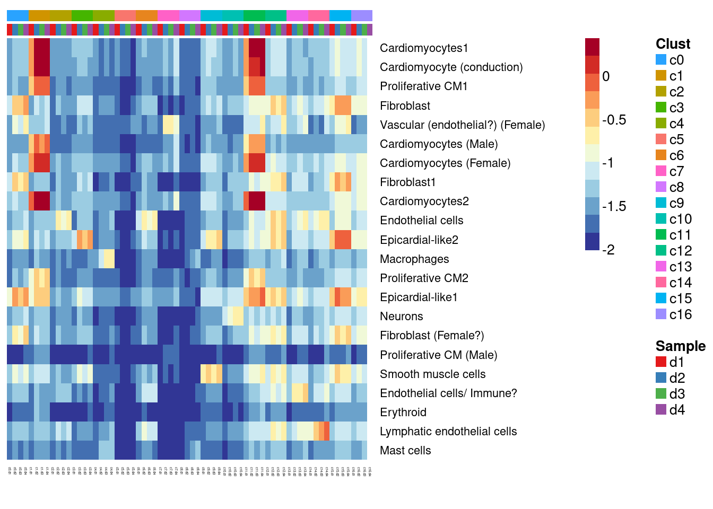
#dev.off()# This loads a list object called non-diseased.sig.genes.gst
#non-diseased samples are the young samples already published in Sim et al., 2021
load(file="/group/card2/Neda/MCRI_LAB/scRNAseq-ES/Data/gstlist-ND.Rdata")
expr.score <- matrix(NA,nrow=length(non.diseased.sig.genes.gst),ncol=length(levels(newgrp)))
colnames(expr.score) <- levels(newgrp)
rownames(expr.score) <- names(non.diseased.sig.genes.gst)
specialm <- lapply(non.diseased.sig.genes.gst,function(x) match(x,rownames(sumexpr))[!is.na(match(x,rownames(sumexpr)))])
for(i in 1:nrow(expr.score)){
expr.score[i,] <- colMedians(sumexpr[specialm[[i]],])
}
#pdf(file="./output/Figures/heatmap-match-nd-dcm-medians.pdf",width=20,height=15,onefile = FALSE)
aheatmap(expr.score,
Rowv = NA,Colv = NA,
labRow = rownames(expr.score),
annCol=list(Clust=clust,Sample=samps),
annColors=myColors,
fontsize=10,color="-RdYlBu",
scale="none")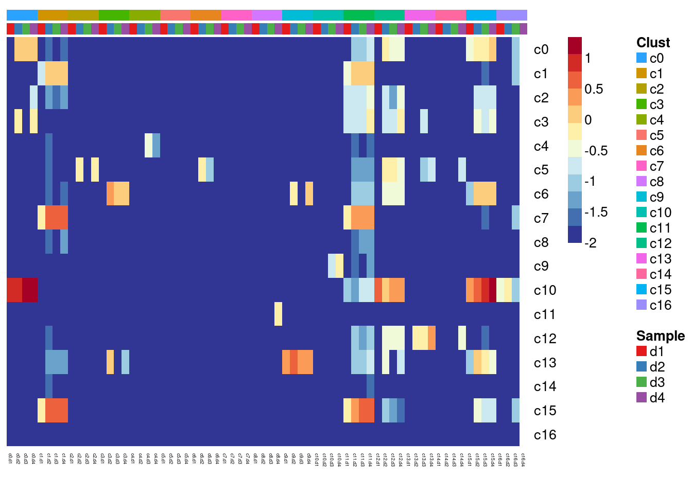
#dev.off()dcm.sig.genes.gst <- vector("list", length(levels(grp)))
names(dcm.sig.genes.gst) <- levels(grp)
for(i in 1:length(dcm.sig.genes.gst)){
top <- topTreat(treat,coef=i,n=Inf,p.value=0.05)
dcm.sig.genes.gst[[i]] <- rownames(top)[top$logFC>0]
}
#save(dcm.sig.genes.gst,file="./data/gstlist-dcm.Rdata")
sessionInfo()R version 4.1.2 (2021-11-01)
Platform: x86_64-pc-linux-gnu (64-bit)
Running under: CentOS Linux 7 (Core)
Matrix products: default
BLAS: /hpc/software/installed/R/4.1.2/lib64/R/lib/libRblas.so
LAPACK: /hpc/software/installed/R/4.1.2/lib64/R/lib/libRlapack.so
locale:
[1] LC_CTYPE=en_US.UTF-8 LC_NUMERIC=C
[3] LC_TIME=en_US.UTF-8 LC_COLLATE=en_US.UTF-8
[5] LC_MONETARY=en_US.UTF-8 LC_MESSAGES=en_US.UTF-8
[7] LC_PAPER=en_US.UTF-8 LC_NAME=C
[9] LC_ADDRESS=C LC_TELEPHONE=C
[11] LC_MEASUREMENT=en_US.UTF-8 LC_IDENTIFICATION=C
attached base packages:
[1] stats4 stats graphics grDevices utils datasets methods
[8] base
other attached packages:
[1] dplyr_1.0.8 clustree_0.4.4
[3] ggraph_2.0.5 ggplot2_3.3.5
[5] NMF_0.23.0 bigmemory_4.5.36
[7] cluster_2.1.2 rngtools_1.5.2
[9] pkgmaker_0.32.2 registry_0.5-1
[11] scran_1.22.1 scuttle_1.4.0
[13] SingleCellExperiment_1.16.0 SummarizedExperiment_1.24.0
[15] GenomicRanges_1.46.1 GenomeInfoDb_1.30.1
[17] DelayedArray_0.20.0 MatrixGenerics_1.6.0
[19] matrixStats_0.61.0 Matrix_1.4-0
[21] cowplot_1.1.1 SeuratObject_4.0.4
[23] Seurat_4.1.0 org.Hs.eg.db_3.14.0
[25] AnnotationDbi_1.56.2 IRanges_2.28.0
[27] S4Vectors_0.32.3 Biobase_2.54.0
[29] BiocGenerics_0.40.0 RColorBrewer_1.1-2
[31] edgeR_3.36.0 limma_3.50.1
[33] workflowr_1.7.0
loaded via a namespace (and not attached):
[1] utf8_1.2.2 reticulate_1.24
[3] tidyselect_1.1.2 RSQLite_2.2.10
[5] htmlwidgets_1.5.4 grid_4.1.2
[7] BiocParallel_1.28.3 Rtsne_0.15
[9] munsell_0.5.0 ScaledMatrix_1.2.0
[11] codetools_0.2-18 ica_1.0-2
[13] statmod_1.4.36 future_1.24.0
[15] miniUI_0.1.1.1 withr_2.4.3
[17] spatstat.random_2.1-0 colorspace_2.0-3
[19] highr_0.9 knitr_1.37
[21] rstudioapi_0.13 ROCR_1.0-11
[23] tensor_1.5 listenv_0.8.0
[25] labeling_0.4.2 git2r_0.29.0
[27] GenomeInfoDbData_1.2.7 polyclip_1.10-0
[29] farver_2.1.0 bit64_4.0.5
[31] rprojroot_2.0.2 parallelly_1.30.0
[33] vctrs_0.3.8 generics_0.1.2
[35] xfun_0.29 doParallel_1.0.17
[37] R6_2.5.1 graphlayouts_0.8.0
[39] rsvd_1.0.5 locfit_1.5-9.4
[41] bitops_1.0-7 spatstat.utils_2.3-0
[43] cachem_1.0.6 assertthat_0.2.1
[45] promises_1.2.0.1 scales_1.1.1
[47] gtable_0.3.0 beachmat_2.10.0
[49] globals_0.14.0 processx_3.5.2
[51] goftest_1.2-3 tidygraph_1.2.0
[53] rlang_1.0.1 splines_4.1.2
[55] lazyeval_0.2.2 checkmate_2.0.0
[57] spatstat.geom_2.3-2 yaml_2.3.5
[59] reshape2_1.4.4 abind_1.4-5
[61] backports_1.4.1 httpuv_1.6.5
[63] tools_4.1.2 gridBase_0.4-7
[65] ellipsis_0.3.2 spatstat.core_2.4-0
[67] jquerylib_0.1.4 ggridges_0.5.3
[69] Rcpp_1.0.8 plyr_1.8.6
[71] sparseMatrixStats_1.6.0 zlibbioc_1.40.0
[73] purrr_0.3.4 RCurl_1.98-1.6
[75] ps_1.6.0 rpart_4.1.16
[77] deldir_1.0-6 viridis_0.6.2
[79] pbapply_1.5-0 zoo_1.8-9
[81] ggrepel_0.9.1 fs_1.5.2
[83] magrittr_2.0.2 RSpectra_0.16-0
[85] data.table_1.14.2 scattermore_0.8
[87] lmtest_0.9-39 RANN_2.6.1
[89] whisker_0.4 fitdistrplus_1.1-6
[91] patchwork_1.1.1 mime_0.12
[93] evaluate_0.15 xtable_1.8-4
[95] gridExtra_2.3 compiler_4.1.2
[97] tibble_3.1.6 KernSmooth_2.23-20
[99] crayon_1.5.0 htmltools_0.5.2
[101] mgcv_1.8-39 later_1.3.0
[103] tidyr_1.2.0 DBI_1.1.2
[105] tweenr_1.0.2 MASS_7.3-55
[107] cli_3.2.0 parallel_4.1.2
[109] metapod_1.2.0 igraph_1.2.11
[111] bigmemory.sri_0.1.3 pkgconfig_2.0.3
[113] getPass_0.2-2 plotly_4.10.0
[115] spatstat.sparse_2.1-0 foreach_1.5.2
[117] bslib_0.3.1 dqrng_0.3.0
[119] XVector_0.34.0 stringr_1.4.0
[121] callr_3.7.0 digest_0.6.29
[123] sctransform_0.3.3 RcppAnnoy_0.0.19
[125] spatstat.data_2.1-2 Biostrings_2.62.0
[127] rmarkdown_2.12.1 leiden_0.3.9
[129] uwot_0.1.11 DelayedMatrixStats_1.16.0
[131] shiny_1.7.1 lifecycle_1.0.1
[133] nlme_3.1-155 jsonlite_1.8.0
[135] BiocNeighbors_1.12.0 viridisLite_0.4.0
[137] fansi_1.0.2 pillar_1.7.0
[139] lattice_0.20-45 KEGGREST_1.34.0
[141] fastmap_1.1.0 httr_1.4.2
[143] survival_3.3-0 glue_1.6.2
[145] iterators_1.0.14 png_0.1-7
[147] bluster_1.4.0 bit_4.0.4
[149] ggforce_0.3.3 stringi_1.7.6
[151] sass_0.4.0 blob_1.2.2
[153] BiocSingular_1.10.0 memoise_2.0.1
[155] irlba_2.3.5 future.apply_1.8.1